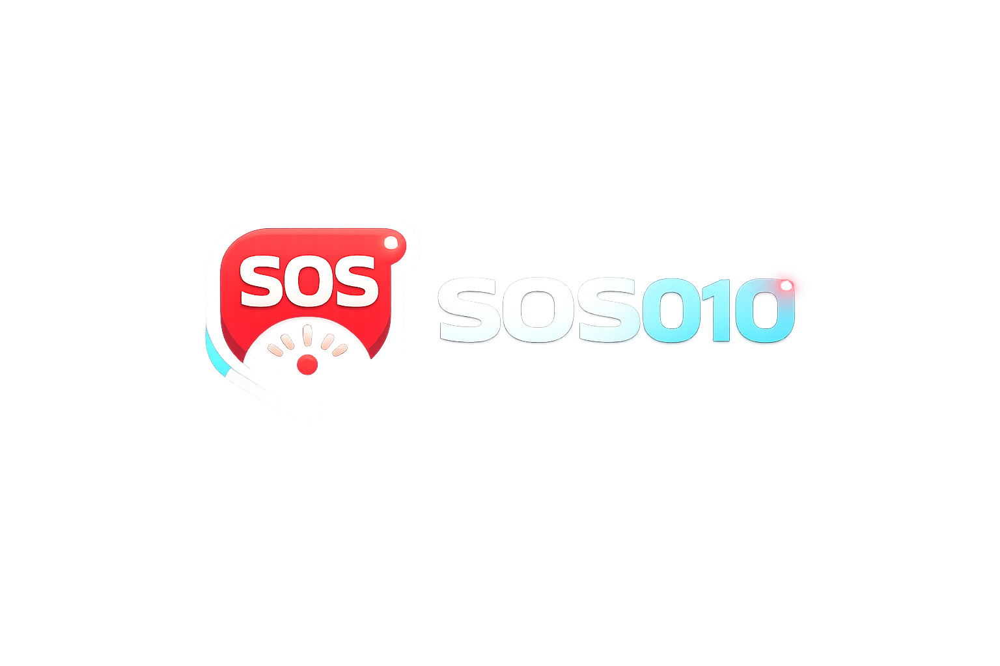

מדד גידול הרשת
נתוני פעילות בזמן אמת של SphereOne Social

לייקים ותגובות אחרונים לפוסטים שלך
אין התרעות חדשות כרגע.
⏳ הפוסט שלך מעובד ומועלה...
אל תרענן את הדף! הכפתור המהבהב באדום מציין שהעיבוד פעיל.
לייקים ותגובות אחרונים לפוסטים שלך
אין התרעות חדשות כרגע.
בחר איש קשר כדי להתחיל לשוחח.
האפליקציה שלנו זמינה להתקנה על המחשב שלך לחוויה מהירה ונוחה יותר, עם התראות בזמן אמת!